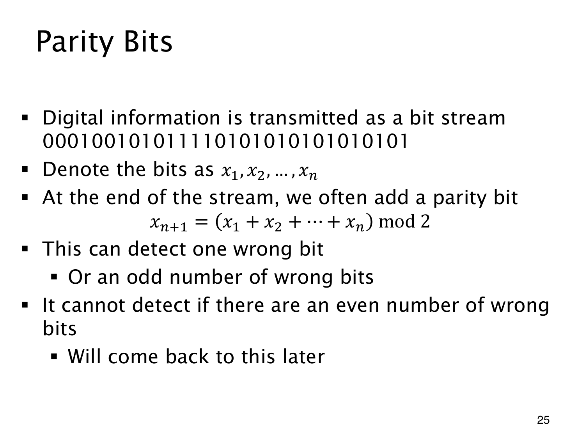

L1.12 · 第 25 页讲解原文
查看这一页课件

用一个比特检查总和的奇偶
接收方只要检查整串比特的和是否为偶数，就能发现单个比特翻转。发送前，先为数据 x1,…,xn 加一个 parity bit（奇偶校验位）：
xn+1=(x1+⋯+xn)mod2.
数据中有偶数个 1，就补 0；有奇数个 1，就补 1。包括校验位在内，始终有 ∑i=1n+1xi≡0(mod2)，因此这种方案叫偶校验。数字信息正是通过这样的 0,1 bit stream（比特流）传输。
一个比特翻转会使总和改变 +1 或 −1，改变奇偶性；奇数个比特翻转也会如此，接收端便能检出。这里也包括校验位本身翻转的情形。
偶数个翻转却保持总奇偶性。例如数据 101 加校验位后发送 1010，前两位翻转成 0110，仍有偶数个 1，检查会通过。检测到错误也无法据此定位哪一位，更不能凭这一个校验位修正它。